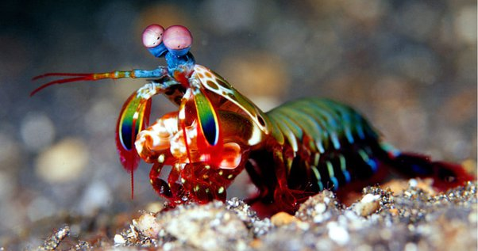
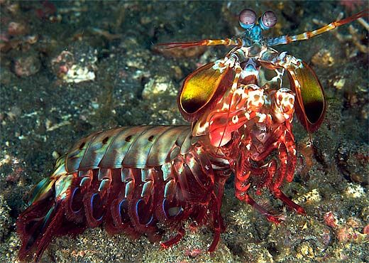
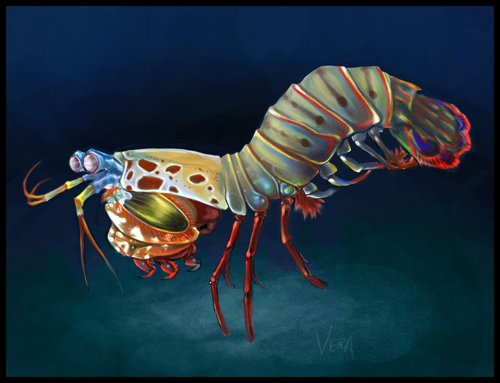

Fatos sobre o Stomatopoda
Informações gerais
O camarão mantis não é um camarão e, exceto pelo fato de ser um artrópode, também não está relacionado ao louva-deus. Em vez disso, os camarões mantis são 500 espécies diferentes pertencentes à ordem Stomatopoda. Para distingui-los do camarão verdadeiro, os camarões mantis são chamados às vezes de estomatoópodes.
Camarões Mantis são conhecidos por suas garras poderosas, que eles usam para espancar ou esfaquear suas presas. Além de seu método de caça feroz, os camarões mantis também são conhecidos por seu extraordinário senso de visão.
- Nome científico: Odontodactylus scyllarus
- Outros nomes: Stomatopod, gafanhoto do mar, separador de polegar, matador de camarão
- Características distintas: Olhos montados em caules móveis que podem se mover independentemente um do outro
- Tamanho médio: 10 centímetros (3,9 pol.)
- Dieta: Carnívoro
- Vida útil: 20 anos
- Habitat: Ambientes marinhos tropicais e subtropicais rasos
- Estado de conservação: Não avaliado
- Fato engraçado: Um ataque de uma garra de camarão mantis é tão forte que pode quebrar o vidro do aquário.
| Reino | Filo | Subfilo | Classe | Subclasse | Ordem |
|---|---|---|---|---|---|
| Animalia | Arthropoda | Crustáceos | Malacostraca | Hoplocarida | Stomatopoda |
Visão

Estomatopodes têm a visão mais complexa no reino animal, excedendo até a das borboletas. O camarão mantis tem olhos compostos montados em caules e pode girá-los independentemente um do outro para examinar seus arredores. Enquanto os humanos têm três tipos de fotorreceptores, os olhos de um camarão mantis têm entre 12 e 16 tipos de células fotorreceptoras. Algumas espécies podem até ajustar a sensibilidade de sua visão de cores.
O conjunto de fotorreceptores, chamados ommatídios, são organizados em linhas paralelas em três regiões. Isso dá a cada percepção da profundidade dos olhos e visão trinocular. Os camarões Mantis podem perceber comprimentos de onda do ultravioleta profundo através do espectro visível e até o vermelho distante. Eles também podem ver luz polarizada. Algumas espécies podem perceber a luz polarizada circularmente - uma habilidade não encontrada em nenhuma outra espécie animal. Sua visão excepcional dá ao camarão mantis uma vantagem de sobrevivência em um ambiente que pode variar de brilhante a escuro e permite que eles vejam e medam a distância a objetos brilhantes ou translúcidos.
Comportamento
Camarões Mantis são altamente inteligentes. Reconhecem e lembram-se de outras pessoas pela visão e pelo cheiro, e demonstram capacidade de aprender. Os animais têm um comportamento social complexo, que inclui brigas ritualizadas e atividades coordenadas entre membros de um par monogâmico. Eles usam padrões fluorescentes para sinalizar entre si e possivelmente outras espécies.
Dieta e Caça
Na maioria das vezes, o camarão mantis é um caçador solitário e recluso. Algumas espécies perseguem ativamente as presas, enquanto outras esperam dentro do covil. O animal mata desdobrando rapidamente suas garras de raptor com uma aceleração impressionante de 102.000m/s2 e velocidade de 23 mps (51 mph). O ataque é tão rápido que ferve a água entre o camarão e sua presa, produzindo bolhas de cavitação. Quando as bolhas colapsam, a onda de choque resultante atinge as presas com uma força instantânea de 1500 newtons. Portanto, mesmo que o camarão erre seu alvo, a onda de choque pode atordoá-lo ou matá-lo. A bolha em colapso também produz luz fraca, conhecida como sonoluminescência. Presas típicas incluem peixes, caracóis, caranguejos, ostras e outros moluscos. Os camarões Mantis também comem membros de sua própria espécie.
Predadores
Como zooplâncton, o camarão mantis recém-eclodido e juvenil é comido por uma variedade de animais, incluindo água-viva, peixe e baleia. Quando adultos, os estomatoópodes têm poucos predadores.
Várias espécies de camarão mantis são comidas como frutos do mar. Sua carne é mais saborosa à lagosta do que ao camarão. Em muitos lugares, comê-los acarreta os riscos usuais associados ao consumo de frutos do mar de águas contaminadas.